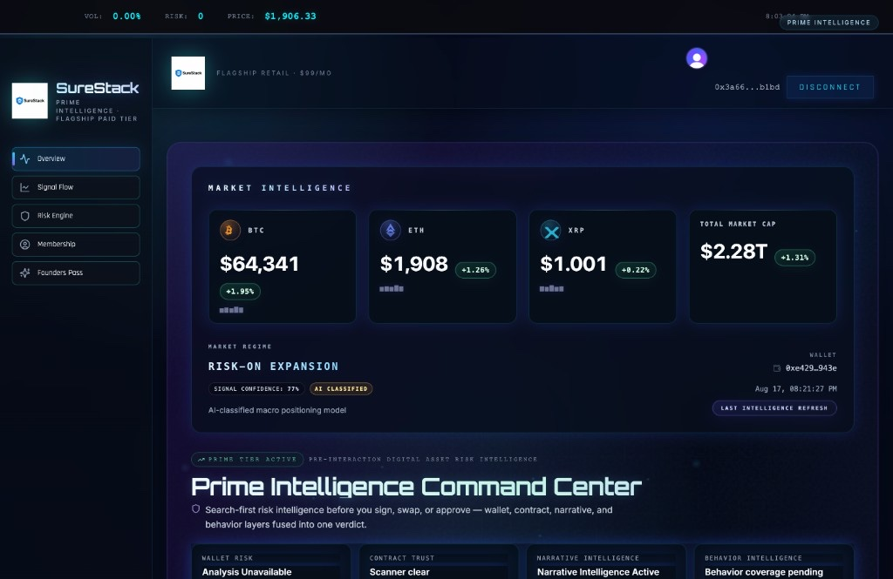

Overview
SureStack is a digital-asset intelligence platform that combines blockchain data, smart-contract infrastructure, wallet/contract/token analysis, market intelligence, and AI-assisted interpretation into a unified risk-analysis experience.
On-chain protocol components have been developed and tested on Ethereum Sepolia. This case study does not claim mainnet production deployment for that smart-contract infrastructure.
Engineering Problem
Digital-asset risk information is fragmented across blockchain explorers, wallet state, contract bytecode and events, token activity, approvals, market feeds, and external intelligence providers.
The engineering challenge is turning those heterogeneous signals into a coherent application architecture — one that lets users investigate digital-asset exposure, inspect contract and token context, and interpret risk without stitching together half a dozen tools by hand.
My Role
Head of Development
I work across product architecture and implementation — translating digital-asset risk requirements into smart-contract, backend, analytics, and application systems. That includes architecture decisions, implementation planning, engineering review, and technical coordination across workstreams.
I personally built the Prime Intelligence frontend — the application interface that exposes SureStack’s digital-asset intelligence workflows.
This role spans architecture, implementation, engineering review, and technical coordination. Individual contributions are identified explicitly throughout this case study.
Prime Intelligence
Personally Built · Frontend BetaPrime Intelligence is SureStack’s digital-asset intelligence application surface. I built the frontend that presents investigation workflows over wallet, contract, token, market, and risk signals — turning fragmented blockchain and market data into a usable analysis interface.
The product surface is organized around engineering workflows rather than marketing features:
- Wallet analysis
- Contract analysis
- Token analysis
- Approval / spender-risk inspection
- Market intelligence
- Wallet health / history
- Scenario analysis
- Alerts
- AI-assisted risk interpretation
These workflows are currently in beta and continue to evolve alongside the platform.

System Architecture
The system is layered so the application UI can consume intelligence services without coupling every workflow directly to a provider API or on-chain call path.
- Wallet
- Contract
- Token
- Market
- Risk
- AI Analysis
External integrations
Provider integrations support subsets of the intelligence surface — not every provider powers every function:
- Alchemy
- Infura
- Etherscan
- Chainlink
- Birdeye
- LunarCrush
Smart-Contract Infrastructure
SureStack’s on-chain work centers on digital-asset and governance-oriented Solidity components. Development and testing target Ethereum Sepolia. Nothing in this section implies mainnet deployment.
- SST token architecture (ERC20Votes) Developed / Tested · Sepolia
- Staking infrastructure Developed / Tested · Sepolia
- Validator / consensus concepts Architecture
- Reward distribution and slashing mechanisms Developed / Tested · Sepolia
- Governor + Timelock governance Developed / Tested · Sepolia
- Policy management contracts Developed / Tested · Sepolia
- OracleReader for external / on-chain intelligence inputs Developed / Tested · Sepolia
- OpenZeppelin governance and security patterns Architecture Pattern
Labels reflect existing portfolio/project evidence for Sepolia development and testing. Exact per-contract deployment receipts can be cited once confirmed for public use.
Engineering Deep Dive
Intelligence work is grouped by engineering domain. Surfaces marked beta remain in active development and should not be read as mature production infrastructure.
Blockchain Intelligence
- Ingest and normalize on-chain context for investigation workflows.
- Separate chain reads from application presentation and interpretation layers.
Wallet Intelligence
- Wallet exposure and risk-oriented analysis surfaces.
- Wallet health / history timeline presentation.
- Hygiene-oriented recommendations grounded in observed wallet activity.
Contract / Token Analysis
- Smart-contract analysis workflows.
- Token analysis and exposure context.
- Approval and spender-risk inspection.
- Suspicious interaction review paths.
Market Intelligence
- Market and volatility context alongside on-chain state.
- Provider-backed market signals (for example Birdeye / LunarCrush where integrated).
Risk Interpretation
- AI-assisted interpretation over assembled blockchain and market context.
- Product surfaces for risk analysis and executive-style verdict presentation Beta
Monitoring / Alerts
- Continuous intelligence monitoring paths.
- Alert surfaces for notable wallet / interaction signals Beta
Technology
- Solidity
- Ethereum / EVM
- OpenZeppelin
- Ethers.js
- TypeScript
- Node.js
- PostgreSQL
- Chainlink
- Etherscan
- Infura
- Alchemy
- LunarCrush
- Birdeye
Engineering Decisions
- Ethereum / EVM
- EVM tooling, contract standards, and ecosystem data availability fit digital-asset risk workflows that need both on-chain state and off-chain interpretation.
- Sepolia for development and testing
- Smart-contract infrastructure is developed and validated on Ethereum Sepolia before any production network consideration — keeping testnet risk separate from mainnet assumptions.
- OpenZeppelin governance primitives
- ERC20Votes, Governor, and Timelock patterns provide reviewed building blocks for token and governance architecture instead of bespoke primitives.
- Separate on-chain state from off-chain intelligence
- Protocol state and analytics/interpretation layers stay distinct so UI workflows can evolve without coupling every risk view to a contract call path.
- Multiple blockchain and data providers
- Different providers cover different signal classes (chain access, explorers, oracles, market context). Aggregation is intentional — not a claim that every provider serves every function.
- TypeScript across application services
- Shared typing across frontend and service boundaries reduces interface drift as intelligence workflows expand.
- Blockchain + market context for risk analysis
- On-chain structure alone is incomplete for exposure decisions; market and volatility context are part of the same investigation model.
Security & Reliability
- OpenZeppelin contract patterns for token and governance components.
- Testnet validation on Ethereum Sepolia before any production deployment assumptions.
- Wallet approval / spender-risk analysis as a first-class investigation surface.
- Separation of blockchain execution concerns from analytics and presentation layers.
- Architecture review of blockchain and backend security assumptions during implementation planning.
What I Personally Built
- Prime Intelligence frontend — application interface for SureStack digital-asset intelligence workflows Personally Built
- Smart-contract infrastructure contributions (token, staking, governance, policy, OracleReader) on Ethereum Sepolia Contribution · Testnet
- Architecture decisions across application, intelligence, and on-chain layers Architecture
- Integration work connecting provider-backed signals into investigation workflows Contribution
- Technical coordination across smart-contract, backend, frontend, and analytics workstreams Leadership
Prime Intelligence exposes wallet, contract, and token intelligence workflows. Backend analytics components are credited separately from my frontend and architecture contributions.
Current Status
Active Development · 2025 – Present
- Beta Prime Intelligence is in beta-stage development.
- Testnet Smart-contract infrastructure remains testnet-only.
- Evolving Application and intelligence capabilities continue to evolve.